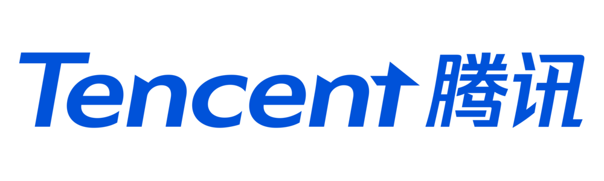
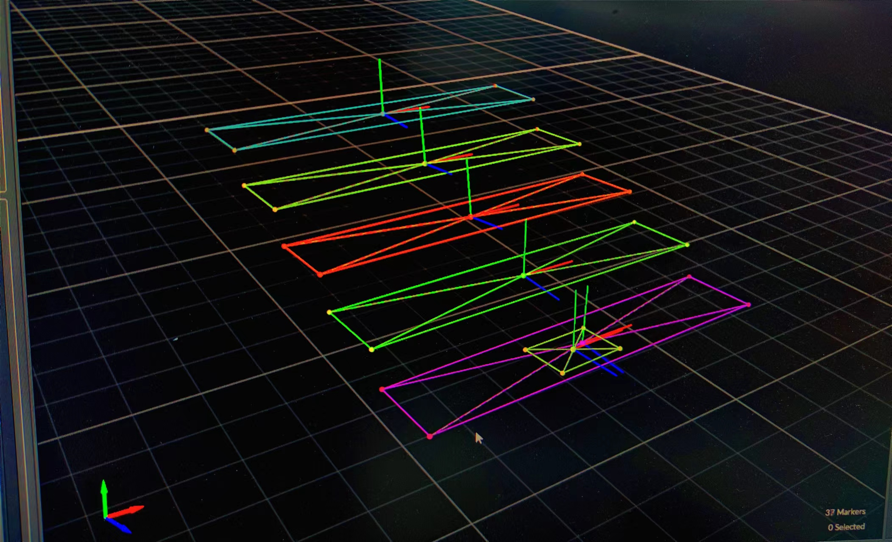
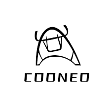

· 李照祥/男/1997/湖北/CET-6
· 手机：15272915445，邮箱：zhaoxiangbox@163.com
· Github：https://github.com/COONEO/neor_mini
|  | 腾讯科技（深圳）有限公司 - Robotics X 实习生 | 2021.11-2022.11 |
|---|
1、台阶上的位置可视化：结合动补系统，为机器⼈(Ollie)编写上台阶的Rviz可视化代码

2、两轮轮腿式机器⼈稳定踏步功能开发：被选⼊Teg事业群对外展⽰机器⼈动作之⼀

3、触觉传感器⼈机交互：被选⼊Teg事业群对外展⽰机器⼈动作之⼀


4、论⽂：在实习导师的指导下，通过算法解决ollie机器⼈⾃平衡和稳定问题，撰写论⽂
|  | 酷牛创新（深圳）技术有限公司 -机器人软件开发 实习生 | 2019.11-2020.09 |
|---|
1.1、移动底盘功能仿真：将阿克曼、差速实体底盘导出URDF⽂件,并且提前使⽤ Gazebo 平台实现SLAM和导航、超声波避障仿真，视觉⻋道线巡线，为真机做预研；
1.2、移动底盘真机驱动开发：阿克曼底盘的正逆运动学模型，制定串⼝通信协议，完成上下位机数据交互，在真机上实现之前仿真预研的相关功能，并编写对应ROS节点；
1.3、移动底盘真机功能开发：轮式/激光⾥程计下的GMapping建图、Hector_mapping建图、 ⾃动导航、视觉⻋道线检测与巡线、多超声波下的决策避障、视觉云台跟踪等；
1.4、独⽴完成开源项⽬：地址如下：(https://github.com/COONEO/neor_mini.git )
Star History
2.1、码垛机械臂功能仿真：导出码垛机械臂URDF⽂件，并使⽤ Moveit Assistant 模拟规划；
2.2、码垛机械臂真机驱动开发：使⽤Arduino mega 2560，步进电机，编写机械臂底层电机驱动程序，并⽤软件⽅式克服步进电机控制下的⼲涉问题；制定串⼝通信协议，实现上下位机通信。
2.3、码垛机械臂逆向解算算法开发：通过⼏何法和D-H⽅法，实现⾃动规划并抓取给定位置的⽬标物功能，并发表⼀篇普通期刊论⽂；
3、响应公司业务需求，绘制ROS⼩⻋PCB:为公司的开源社区贡献可以实现阿克曼、履带、差速⼩⻋电机的控制、PPM遥控控制、舵机机械臂控制的Arduino扩展板，并编写配套代码及详细的推⽂，已售卖近百套；


⼀、⾃动驾驶⼩⻋仿真-开源仓库
1、Solidworks 3维图纸转URDF⽂件，选择关节（joint）和实体（link）的⽅法；
2、Gazebo下加载并编码驱动阿克曼类型移动底盘；
3、Gazebo下移动底盘的正逆向解算，编码实现订阅速度、发布轮式⾥程计数据；
4、Gazebo下基于3路超声波实时测距，并⾃定义策略然后实现动态避障；
5、Gazebo下基于摄像头和建⽴的Gazebo world 环境，利⽤opencv实现⻋道线寻迹；
6、Gazebo下基于单线激光雷达的SLAM建图，分别利⽤轮式⾥程计 + 激光⾥程计；
7、Gazebo下基于轮式/激光⾥程计的避障与导航的实现；
8、基于ROS Action 通讯⽅式下的多点导航/寻迹节点编码的实现；
9、实⻋电机速度PID、转向舵机控制的Arduino程序，串⼝通信程序的编写；
A、实⻋SLAM建图导航、视觉寻迹、多点寻迹、超声波避障的实现；
B、实⻋基于“张⽒标定法”的⼴⻆摄像头的矫正与去畸变的复现；
C、实⻋基于⽬标检测的单⽬测距的编码实现；
D、实⻋DWA、TEB、MPC等局部路径规划算法的部署与调试；
E、实⻋Dijkstra、A*等全局路径规划算法的部署与调试；
F、独⽴制作、维护Git仓库、撰写知乎技术博客，地址如下：
github: https://github.com/COONEO/neor_mini.git
知乎： https://www.zhihu.com/people/jeff-44-13
二、差速-履带-阿克曼实体建图导航⼩⻋-开源仓库
1、通过 Solidworks 绘制机器⼈的各层亚克⼒板图纸及选择对应的机构件；
2、使⽤ Arduino mega 2560 + 树莓派4B 的硬件架构，结合底层的控制需求，⽤kicad绘制Arduino 扩展板，预留编码电机、PPM遥控器、舵机、5V稳压电源、⻋辆指⽰灯等硬件接⼝，省去使⽤杜邦线连接的繁琐；
3、编写底层 Arduino 的电机 PID 控制、PPM控制、⻋辆指⽰灯状态切换、舵机机械臂控制程序、串⼝通信程序，超声波解析程序等；
4、编写对应不同底盘的ROS节点和技术博客，提供配套的软硬件解决⽅案；
5、三种类型实体⼩⻋上实现：SLAM定位建图、navigation定点导航、摄像头视觉寻迹、摄像头云台跟踪、颜⾊识别、舵机机械臂抓取等功能；
6、项⽬地址：https://github.com/COONEO/Arduino_Raspberry_ROS_Car.git
7、博客地址：https://www.zhihu.com/people/jeff-44-13
三、重庆航道局可视化航标灯项目
1、项⽬需要为：⻓江流域重庆航道局段航标灯的可视化传输与⽬标识别与测距软硬件实体的实现；
2、结合项⽬体积、功耗、成本等因素，为项⽬做软硬件实体设计调研，并协助研究⽣导师设计基于树莓派CM4的硬件计算主体；
3、负责3个130度摄像头模组的选型，图像画⾯的展⽰；、
4、使⽤ 某⽬标检测框架的轻量版本 在⾃研的航标灯计算主体上部署船舶识别算法的预研⼯作，给⼩组其他成员搭好框架；
5、学习并使⽤ opencv 中的张⽒标定法、求解摄像头模组的内参及畸变参数，并优化画⾯；
5、学习并⾃⾏编写单⽬测距算法，该⽅法需要结合⼩组其他成员的⽬标检测的输出结果，实际测量满⾜项⽬需求，为项⽬省增加测距雷达的成本；
6、于2021年7⽉，参与重庆市航道局的“可视化航标灯”的验收⼯作，并顺利结项。
1、“兆易创新杯”第⼗七届研究⽣电⼦设计竞赛 华中分区团队⼀等奖 - 2022.08
1、⼀种可远程控制的照明灯开关⾮接触式按压装置的制作⽅法（本科专利）
2、王帅, 张竞帆, 李照祥, 王家浩, 郑宇，移动机器⼈的运动控制⽅法和移动机器⼈，国家发明专利，申请号：
202211002012.9，已受理。（腾讯实习期间专利，前两位领导）
4、王帅, 张竞帆, 李照祥, 王家浩, 郑宇，移动机器⼈的运动控制⽅法和移动机器⼈，国家发明专利，申请号：
202211002000.6，已受理。（腾讯实习期间专利，前两位领导）